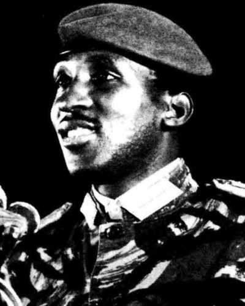

Ideologies / Radical Left
What is Sankarism?
Sankarism is a political ideology in the Radical Left family. The founding document of the 1983 revolution in Upper Volta, later Burkina Faso. It says independence changed only the form of foreign domination, and calls the revolution democratic and popular, directed against imperialism, the local bourgeoisie tied to it and the old chiefly order. Power is to be exercised through Committees for the Defence of the Revolution in every village and workplace, with an army that also takes part in production. It aims at an independent, self sufficient, planned economy, and holds that the revolution cannot succeed without the emancipation of women.
Homeland or death, we shall overcome!
Defined from: Thomas Sankara, National Council of the Revolution, Political Orientation Speech (1983)
See how close you are to Sankarism Dare a friend to answer as one

.png){kind=link}
Where Sankarism stands on 13 axes
Each axis runs from 0 to 100. A score of 50 is the middle. On a classic compass it sits in the Authoritarian Left quadrant.
| Axis | Position | Score | In words |
|---|---|---|---|
| EconomyMarket to Planned | 85 | Very strongly Planned | |
| OwnershipPrivate to Collective | 85 | Very strongly Collective | |
| RightsLiberty to Security | 70 | Strongly Security | |
| GovernmentDemocracy to Autocracy | 80 | Strongly Autocracy | |
| StructureDecentralised to Centralised | 70 | Strongly Centralised | |
| NationInternationalist to Nationalist | 65 | Leans Nationalist | |
| ImmigrationMulticulturalist to Assimilationist | 45 | Balanced | |
| ValuesProgressive to Traditional | 15 | Very strongly Progressive | |
| TechnologyAccelerationist to Precautionary | 35 | Leans Accelerationist | |
| EnvironmentIndustrialist to Environmentalist | 50 | Balanced | |
| ReligionSecular to Religious | 5 | Very strongly Secular | |
| MilitaryPacifist to Militarist | 65 | Leans Militarist | |
| TradeFree Trade to Protectionist | 90 | Very strongly Protectionist |
Ideologies closest to Sankarism
- Castroism84% alike
- Nkrumaism84% alike
- Bukharinism (Right Opposition)81% alike
- Maoism81% alike
- Blanquism79% alike
Its opposite on this map is Crypto Anarchism, at 28%.
Parties near Sankarism
National Council of the Revolution (Burkina Faso) was the first party or movement to carry it, placed here from Political Orientation Speech (1983).
- Communist Party of CubaCuba. Conceptualización del Modelo Económico y Social Cubano (2021)86% alike
- National Council of the RevolutionBurkina Faso. Political Orientation Speech (1983)86% alike
- Communist Party of China of 1940China. On New Democracy (1940)82% alike
- Economic Freedom FightersSouth Africa. Founding Manifesto (2013)82% alike
Common questions
What is Sankarism?
Sankarism is a political ideology in the Radical Left family. The founding document of the 1983 revolution in Upper Volta, later Burkina Faso. It says independence changed only the form of foreign domination, and calls the revolution democratic and popular, directed against imperialism, the local bourgeoisie tied to it and the old chiefly order. Power is to be exercised through Committees for the Defence of the Revolution in every village and workplace, with an army that also takes part in production. It aims at an independent, self sufficient, planned economy, and holds that the revolution cannot succeed without the emancipation of women.
What does Sankarism believe?
In one line: Homeland or death, we shall overcome! Its strongest positions are Secular, Protectionist, Planned. The founding document of the 1983 revolution in Upper Volta, later Burkina Faso. It says independence changed only the form of foreign domination, and calls the revolution democratic and popular, directed against imperialism, the local bourgeoisie tied to it and the old chiefly order. Power is to be exercised through Committees for the Defence of the Revolution in every village and workplace, with an army that also takes part in production. It aims at an independent, self sufficient, planned economy, and holds that the revolution cannot succeed without the emancipation of women.
Who founded Sankarism?
Sankarism is defined here from Political Orientation Speech (1983) by Thomas Sankara, National Council of the Revolution. The thinker most tied to it is Thomas Sankara (1949 to 1987).
Is Sankarism left wing or right wing?
On a classic two axis compass Sankarism falls in the Authoritarian Left quadrant, which means the economic left and the authoritarian side. Left and right hide a lot, though, which is why EthosScales scores it on thirteen separate axes.
How is Sankarism different from Castroism?
They are close: 84% alike. The biggest gaps are on Environment, where Sankarism scores 50 and Castroism scores 25, and Trade, where Sankarism scores 90 and Castroism scores 65. On each axis, 0 is one end and 100 is the other.
Think this is wrong? Suggest a correction. The scores are editorial estimates.